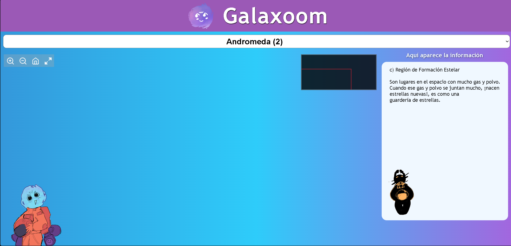
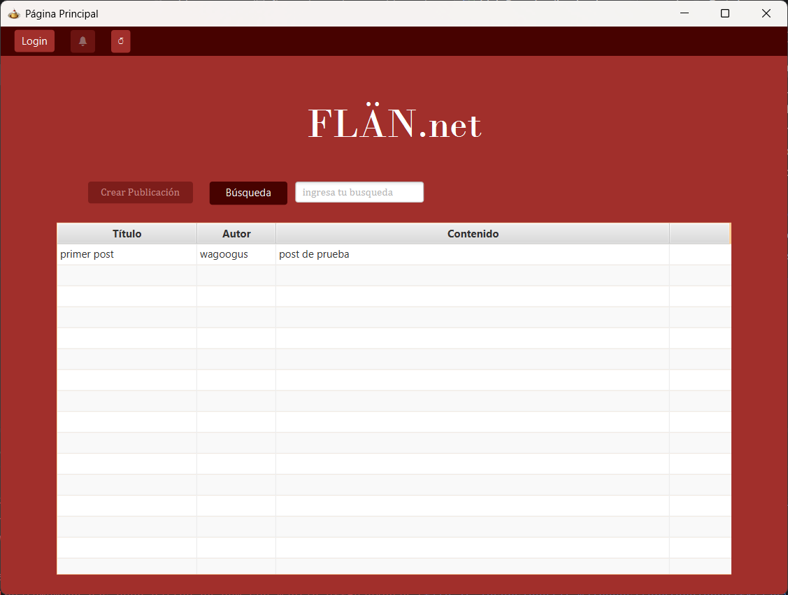
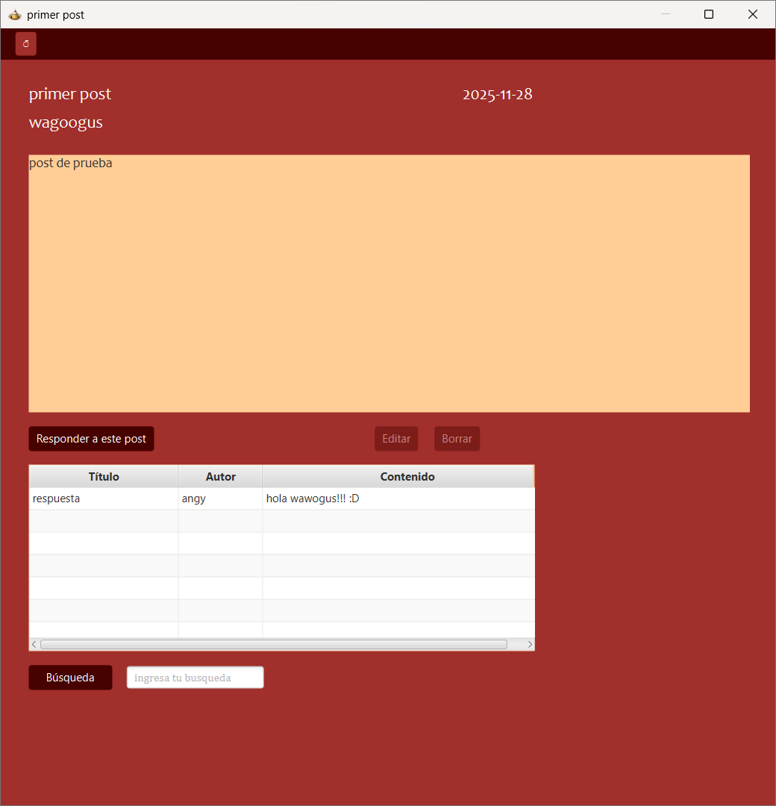
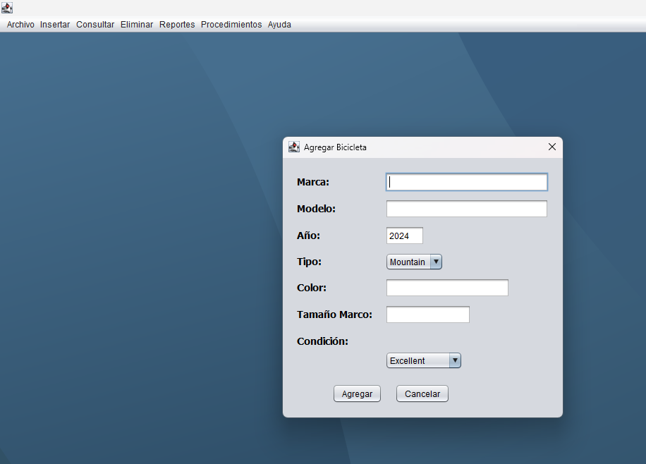
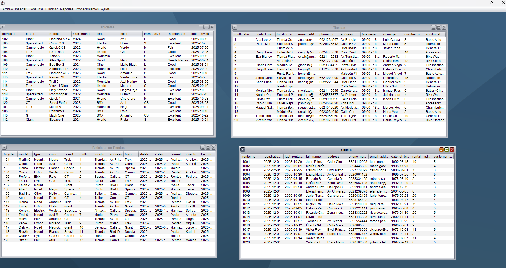
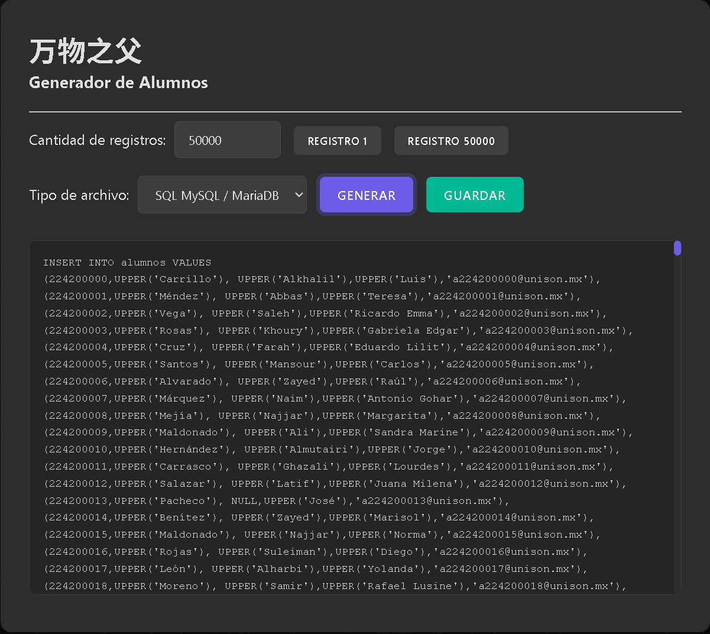
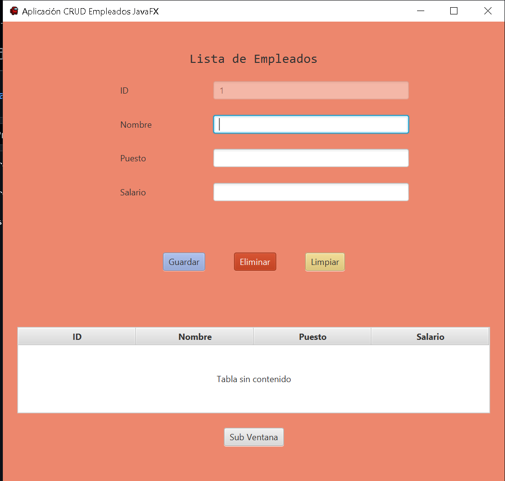
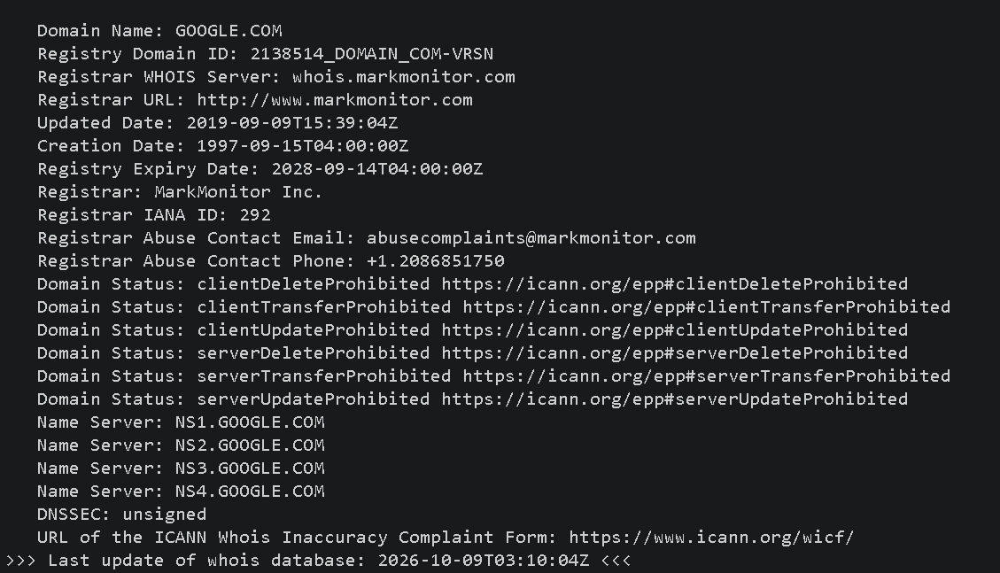
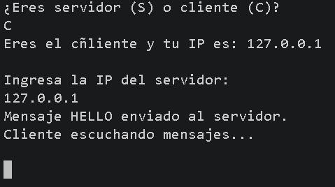

Trabajo para el hackathon NASA Spaceapps Challenge 2025 desarrollado por la SisteFamily.

El proyecto Foro Flan utiliza Java para la creación de una interfaz gráfica por la cual el usuario pueda comunicarse con una base de datos relacional MySQL, permitiendo la creación de usuarios, publicaciones y respuestas en un foro.


Aplicación para el uso de servicios de renta de bicicletas utilizando una base de datos con funcionalidad de almacenar la información sobre todas las operaciones y eventos de la renta.


Este proyecto es una herramienta que genera inserciones de alumnos en distintos formatos (mysql, postgre, CSV, JSON). Está compuesto en html, javascript y su estilo es css.

Práctica sencilla que funge de introducción al manejo de javafx para hacer interfaces gráficas (GUI) en este caso de un sistema que gestiona empleados.

Estos ejercicios son de la relacion cliente-servidor, cubren: los sockets UDP y TCP, multicast, hilos para recepción, puertos y direcciones IP, consultas DNS, peticiones HTTP, WHOIS y chats entre dos o mas participantes. Todo para practicar cómo se envían y reciben datos por la red y cómo Java implementa los protocolos mas comunes.

